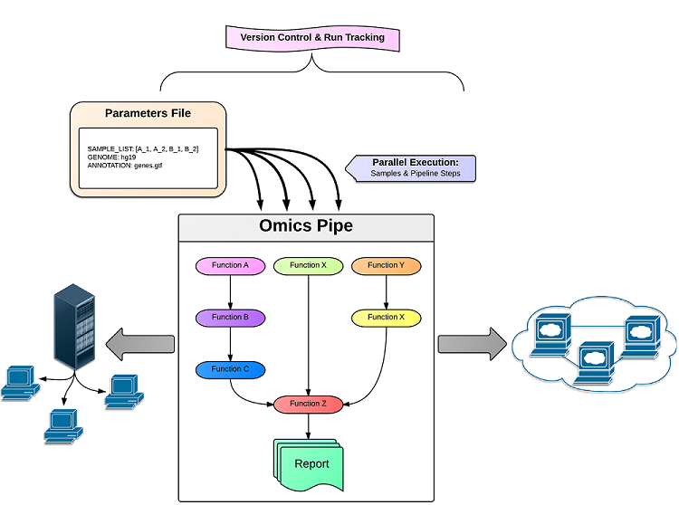

About Omics Pipe¶
Omics pipe is an open-source, modular computational platform that automates ‘best practice’ multi-omics data analysis pipelines published in Nature Protocols and other commonly used pipelines, such as GATK. It currently automates and provides summary reports for two RNA-seq pipelines, two miRNA-seq pipelines, variant calling from whole exome sequencing (WES), variant calling and copy number variation analysis from whole genome sequencing (WGS), two ChIP-seq pipelines and a custom RNA-seq pipeline for personalized genomic medicine reporting. It also provides automated support for interacting with the The Cancer Genome Atlas (TCGA) datasets, including automatic download and processing of the samples in this database.
Omics pipe is a Python package that can be installed on a compute cluster, a local installation or in the cloud. It can be downloaded directly from the Omics pipe website for local and cluster installation, or can be used on AWS in Amazon EC2. The modular nature of Omics pipe allows researchers to easily and efficiently add new analysis tools with Bash scripts in the form of modules that can then be used to assemble a new analysis pipeline. Omics pipe uses Ruffus to pipeline the various analysis modules together into a parallel, automated pipeline. The dependence of Omics pipe on Ruffus also allows for the restarting of only the steps in the pipeline that need updating in the event of an error. In addition, Sumatra is built into Omics pipe, which provides version control for each run of the pipeline, increasing the reproducibility and documentation of your analyses. Omics pipe interacts with the Distributed Resource Management Application API (DRMAA), which automatically submits, controls and monitors jobs to a Distributed Resource Management system, such as a compute cluster or Grid computing infrastructure. This allows you to run samples and steps in the pipeline in parallel in a computationally efficient distributed fashion, without the need to individually schedule and monitor individual jobs. For each supported pipeline in Omics pipe, results files from each step in the pipeline are generated, and an analysis summary report is generated as an HTML report using the R package knitr. The summary report provides quality control metrics and visualizations of the results for each sample to enable researchers to quickly and easily interpret the results of the pipeline.
Available Pipelines¶
- Omics Pipe Available Pipelines
- Pipelines supported by this version of omics pipe.
Users¶
Projects that have used Omics Pipe for solving biological problems. Please submit your story if you would like to share how you use the pipeline for your own research.
- The Scripps Research Institute, Lotz Lab: The Lotz Lab in the Department of Molecular and Experimental Medicine at TSRI uses Omics Pipe to perform RNA-seq and miRNA-seq analyses on human articular cartilage samples to elucidate molecular pathways dysregulated in Osteoarthritis.
- Avera Health: Researchers working in collaboration with Avera Health use Omics Pipe to analyze sequence data from multiple platforms to provide personalized medicine to breast cancer patients.
- Scripps Laboratories for tRNA Synthetase Research: Researchers working in collaboration with Scripps Laboratories for tRNA Synthetase Research use Omics Pipe to analyze ChIP-seq data to explore transcription factor binding sites under experimental conditions.
- Dorris Neuroscience Center: Researchers working in collaboration with The Maximov Lab in the Department of Molecular and Cellular Neuroscience at The Scripps Research Institute use Omics Pipe to analyze RNA-seq data to determine how extensive activity-dependent alternative mRNA splicing occurs in the transcriptome of a mouse model that is born and develops to adulthood without synaptic transmission in the forebrain.
- Sanford Burnham Medical Research Institute: Researchers working in collaboration with The Peterson Lab in the Bioinformatics and Structural Biology Program at Sanford Burnham Medical Research Institute are using Omics Pipe to perform RNA-seq based global gene expression analysis of dental plaque microbiota derived from twin pairs to identify functional networks of the dental microbiome in relation to dental health and disease.
Developers¶
Omics Pipe is developed by Kathleen Fisch, Tobias Meissner and Louis Gioia at The Su Lab in the Department of Molecular and Experimental Medicine at The Scripps Research Institute in beautiful La Jolla, CA.
Contact¶
Feedback, questions, bug reports, contributions, collaborations, etc. welcome!
Email: kfisch@scripps.edu
Twitter: @kathleenfisch